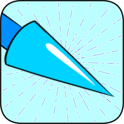
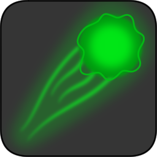
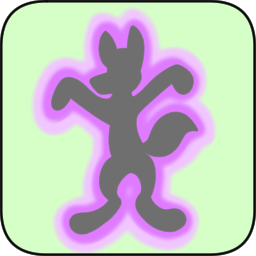

Spellbook
Casarokan magic spells are divided into four schools and 12 elements. For more information regarding an introduction to Casarokan magic, see the magic section.
Fire
School: Arcane
Weak Against:
Strong Against: 
Specialist Title: Pyromancer, Fire Mage
Fire magic is used by Casarokan mages to generate fire and heat. This task is accomplished through the use of friction generated by the caster's mana. Once enough friction is generated, the heat can be used to ignite the oxygen in the air to produce fire. Further use of mana is required to shape the resulting energy and redirect it.
Burn status is often associated with fire magic. Those who are inflicted with magic burns usually see a decrease in physical strength on the part of the body that is affected. A dire burn on the other hand is akin to a third-degree burn. People afflicted with dire burn status often have greatly decreased physical strength and in extreme cases lasting damage to areas affected.
- Firebolt: A burst of fire that flies in a straight line toward an enemy target
- Burning Touch: The user imbued their hand with fire energy, allowing them to inflict burn status on a touched or grasped target
- Cauterize: A target wound is closed using heat energy, preventing them from bleeding
- Candle: The user creates a small flame that provides light in a darkened area
Frost
School: Arcane
Weak Against:
Strong Against:

Specialist Title: Cryomancer, Frost Mage
Frost magic is used by Casarokan mages to generate ice and cold. Frost magic works by using mana to absorb heat. This process creates a cooling effect in the air surrounding the user. Once the air is cooled, water can be condensed into frost or ice. If more mana is used, the effect or can be redirected.
Freeze status is linked heavily to frost magic. Those who are inflicted with magic freeze are rooted into place and cannot move from the spot from which they are frozen. The most skilled frost mages can put a target into a deep freeze, which traps the entire target in ice. An opponent in deep freeze cannot move at all. Those afflicted with freeze effects can have frostbite or hypothermia even after the effect is gone.
- Frostbolt: A burst of frost that flies in a straight line toward an enemy target
-  Icicle Lance: The user creates a lance made of ice that can be used as a weapon or thrown at an enemy target
 Cryogenesis: A target is inflicted with deep freeze status
Cryogenesis: A target is inflicted with deep freeze status
Lightning
School: Arcane
Weak Against:
Strong Against:
Specialist Title: Electromancer, Lightning Mage
Frost magic is used by Casarokan mages to generate lightning and electricity. Lightning magic works by using mana to create positive and negative charges in the air or on various surfaces. These charges can then be concentrated to achieve the desired effect. More mana can be used to redirect an electrical charge once it is created by the user.
Paralysis status is widely known amongst electromancers. Paralyzed targets have reduced mobility in the affected area. Full paralysis, on the other hand, completely restricts the use of afflicted body parts. Full paralysis effects can cause numbness and joint pain to linger on even after the spell wears off or the status is healed.
 Lightningbolt: A burst of lightning that flies in a straight line
toward an enemy target
Lightningbolt: A burst of lightning that flies in a straight line
toward an enemy target- Lightning Reflexes: The target is imbued with electricity that enhances their nervous system, improving their reaction time and reflexes
- Recharge: The target electronic device is provided with electrical power; must be channeled for as long as the device is to be charged
Space
School: Arcane, Divine
Weak Against:
Strong Against: 
Specialist Title: Conjurer, Summoner
Space magic has a wide range of use for Casarokan mages from portals and teleportation to far sight and spatial awareness to conjuring and summoning items and creatures. It is the most difficult to learn and use among the School of the Arcane due to the various ways it is implemented. Mana must be used to bend space or convert it into matter.
- Manabolt: A burst of mana that flies in a straight line toward an enemy target
- Teleport: The user travels through space to reach a new point instantaenously
 Polymorph: The target's body is reconfigured, transforming into a
new form
Polymorph: The target's body is reconfigured, transforming into a
new form- Conjure Food: The user creates a piece of food that may be consumed by the user or another anthro
Air
School: Elemental
Weak Against:
Strong Against:
Specialist Title: Aeromancer, Air Elementalist
Air magic deals with moving, compressing, and reshaping the air around a user. It is done by expending mana to manipulate air particles. Any gaseous substance mixed into the air can also be focused by the elementalist. Aeromancers are also capable of using wind to levitate themselves or others. Some aeromancers are even capable of manipulating sound waves.
Silence status is common among aeromancers. By removing the air in or around another magic users, it becomes more difficult for them to use incantations which increases casting time. Full silence is a state in which the afflicted cannot speak at all, preventing them from casting any method of spell.
- Airblast: A burst of wind that flies in a straight line toward an enemy target
- Air Cutter: The user creates a sharp segment of wind that can slice through the target as if by a knife or sword
- Levitate: The user creates a strong updraft, essentially allowing them to stand on the air
Earth
School: Elemental
Weak Against:
Strong Against:
Specialist Title: Geomancer, Earth Elementalist
Earth magic is based on the movement, combining, breaking, and reshaping of rock and soil. To do this the elementalist must expend mana to manipulate these substances. Earth can be separated from any other chemical or magical impurities mixed with it. Geomancers can burrow underground by moving the earth around them. Those who are highly skilled in earth magic have the potential to use their abilities on earthy metals such as iron and copper.
Petrification status can be done by certain earth spells. The target of this effect is partially or fully turned to stone. While it restricts the movement of the affected area, the petrified is protected against most attacks; however, they are also vulnerable to certain magics such as the geomancers own earth manipulation spells. Full petrification is the state in which the afflicted is completely turned to stone, incapable of any movement, and unable to access their mana for spellcasting.
- Earthblast: A burst of rock that flies in a straight line toward an enemy target
- Earth Shield: The user creates a shield of earth energy around a target, reducing their damage from physical attacks
- Stoneskin: The target is inflicted with petrify status
Water
School: Elemental
Weak Against:
Strong Against:
Specialist Title: Hydromancer, Water Elementalist
Water magic has to do with moving, compressing, and reshaping liquid water or water vapor from the air. A hydromancer must expend their mana to manipulate the water directly. By doing so, any liquid substance mixed with water can be moved with or separated from the water as well. Water users can engage in the creation of bubbles for breathing underwater or, in advanced cases, actually use water breath.
Sleep status is a common ailment used by hydromancers. The water elementalist uses the power of water to soothe the target and put them soundly to sleep. Anything that would normally wake up anyone put to sleep will work on the affected. Deep sleep, however, completely incapacitates the target andby putting them into a hibernation state in which they are unable to awaken by normal means.
- Waterblast: A burst of water that flies in a straight line toward an enemy target
- Bubble Bind: The target is encased in a bubble for a period of time or until the bubble is broken by force
- Healing Rain: The user creates a soft rain on the target, healing them for a small amount over time
- Soothing Waves: The target is inflicted with sleep status through the use of calming waves of water
Time
School: Elemental, Divine
Weak Against: 
Strong Against:
Specialist Title: Scryer, Seer
Time magic is done by using mana to call upon the geological forces of the elements through the eras. Elementalists can thus manipulate time in different ways. These techniques are difficult to master, nonetheless, for those studying in the School of the Elements.
- Warpblast: A burst of mana that flies in a straight line toward an enemy target
- Blink: The user travels through time to reach a new point instantaneously
- Primordialize: The target changes into the primordial form for their particular species
 Nature
Nature
School: Metaphysical
Weak Against: 
Strong Against:
Specialist Title: Druid, Nature Wizard
Nature magic regards the use of mana to manipulate the forces of nature. This can be channeled by tapping into the wrath of nature, manipulating plant and feral life, or changing one's body to adapt to a given situation. Some druids are capable of shapeshifting. Some druids are capable of healing through effects that replenish over time.
Poison status is an ailment often used by druids. The afflicted takes damage over time from the poison effect until it is cured or removed. Deep poison is an effect that is extremely similar to the normal poison state. Deep poison deals more damage to the afflicted and is harder to remove.
-  Nature's Wrath: A burst of pure natural energy that flies in a straight line toward an enemy target
- Envenom: The target is inflicted with poison status
- Replenish: The target is healed for an amount of health over a limited duration
- Shapeshift: The user is transformed into the creature associated with the spell (each shapeshift spell is associated with one anthro or feral)
Spirit
School: Metaphysical
Weak Against:
Strong Against:
Specialist Title: Spiritualist, Spirit Wizard
Spirit magic is based on expending mana to manipulate the power of souls in oneself or another person. Spiritualists must tap into their own spiritual power to do so. Capabilities of users of spirit magic include soulfire generation, astral projection, and possession. Spiritualists are also capable of healing other through the use of channeling effects.
Soulburn is the status most used by spiritualists. Those afflicted with this effect have the strength of their magic spells reduced. Dire soulburn is an effect that is greatly weakens one's magic power. Soulburn, in general, leaves a burning sensation within one's body that cannot be extinguished by conventional means and leaves a similarly lingering effect even after it is removed.
- Soulfire: A burst of pure spiritual energy that flies in a straight line toward an enemy target
-  Spirit Healing: The user channels their spirit energy into the target, healing them for an amount of health for as long as the spell is channeled
- Astral Projection: The user's spirit leaves their body, allowing them to roam freely in spirit form
Light
School: Metaphysical, Divine
Weak Against:
Strong Against:
Specialist Title: Cleric, Light Wizard
Light magic calls upon holy energy provided to the mortals of Casarok by the gods and goddesses. While powerful in its own right, it is particularly useful against those harnessing unholy or shadow energy. Clerics are also capable of healing by using burst magic to replenish the target immediately, usually after a lengthy casting time.
- Holy Smite: A burst of light energy that strikes an enemy target
Dark
School: Metaphysical, Divine
Weak Against:
Strong Against:
Specialist Title: Sorcerer, Dark Wizard
Dark magic calls upon the darkness and shadow energies given by the gods and goddesses of Casarok. Dark magic is extremely powerful, perhaps moreso than any other form of magic in Casarok; however, it is kept in check by light magic. Many mortals go crazy with power when learning the dark arts. Sorcerers are, nevertheless, capable of healing using their dark powers: They must inflict damage to themselves or another first in order to use healing magics, making all healing done by sorcerers vampiric in nature.
- Shadow Strike: A burst of shadow energy that strikes an enemy target